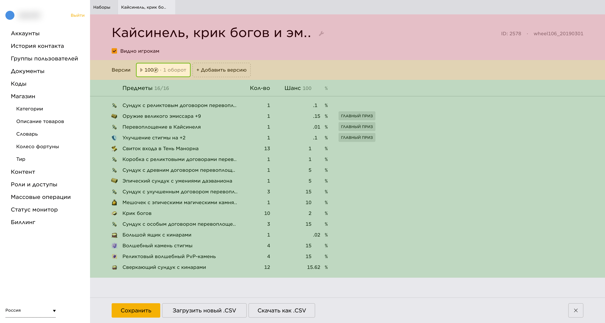
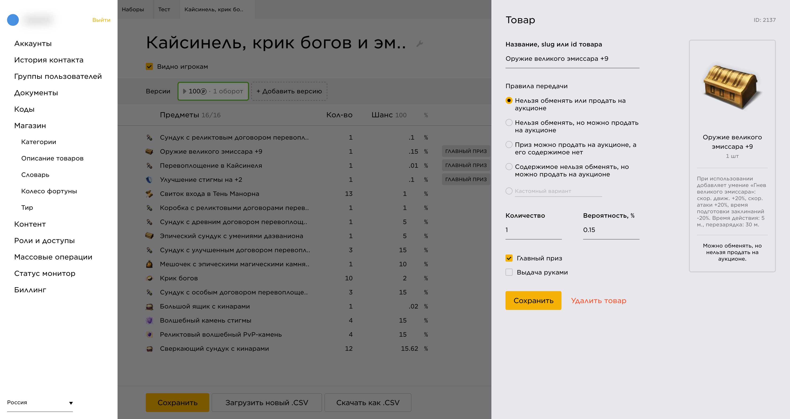
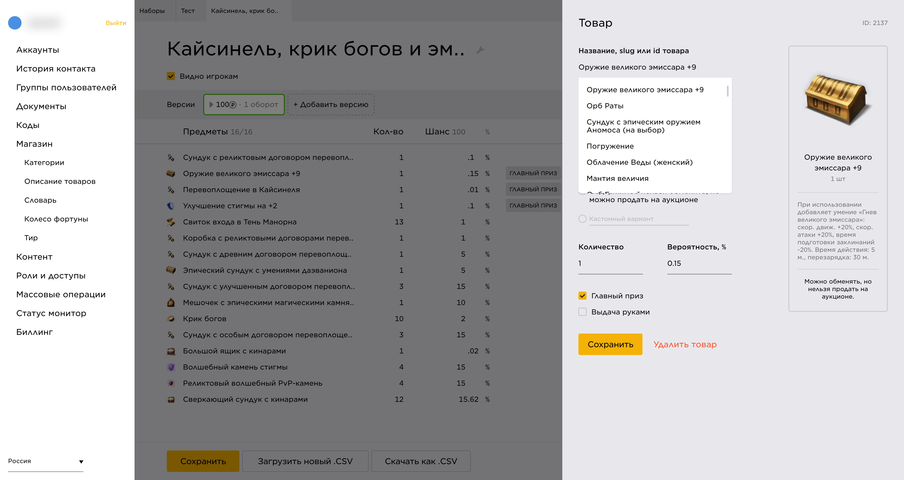

Управление Колесом Фортуны на Фогейме
Вводные
Колесо Фортуны — дополнительная монетизационная механика одной из игр на платформе. Фактически это лутбокс — игрок платит за случайный предмет из призового пула. Управлением лутбокса занимаются игровые команды. Их задача — составить призовой пул, посчитать экономику, подготовить товары, шансы выпадения предметов, описания и так далее.
Старый процесс работы с колесом включал в себя большое количество шагов, а так же был строг к ошибкам в процессе:
- Формируется список предметов
-
Заводится таблица в Google Sheets/Libra Office, которая содержит список предметов. Для каждого предмета указывается:
- Название
- Описание
- Особенности передачи предмета внутри игры
- Slug предмета из вебшопа
- Количество получаемых предметов при выигрыше
- Шанс 0...1
- Булевый параметр, отмечающий главные призы
- Булевый параметр, отмечающий предметы, требующие ручного начисления сотрудником
- После проверки, данные таблицы руками переносятся в специальный инструмент, написаный бэкэндерами. В инструменте так же настраиваются дополнительные параметры Колеса, такие как видимость игрокам, стоимость игры, количество оборотов и так далее.
- Настроенное колесо публикуется на платформе и доступно игрокам
В такой системе я вижу несколько недостатков:
- Много ручного копирования, как на этапе формирования списка товаров, так и при переносе во внутренний инструмент. Во-первых, это долго, во-вторых, даёт множество возможностей для ошибки.
- Дублируется функциональность другого сервиса — Вебшопа. Если находятся ошибки в описании товара, то не всегда очевидно, где искать проблему — в настройках Колеса, либо в Вебшопе.
- Плохой интерфейс внутреннего инструмента:
- Сложно проверить правильность Колеса до публикации
- Сложно найти и отредактировать данные отдельного предмета
- Для связывания призов и предметов из Вебшопа команде приходилось использовать технические slug'и, которые сложнее проверить быстро.
Требования
Изначально задача состояла в поддержке импорта таблицы призов из Google Sheets/Libra Office и отображении таблицы в Кэрриере. Это было сделано без моего участия. Однако оказалось, что, во-первых, таблица содержит только данные о призах, но не параметры самого Колеса, и обойтись только импортом не получится. Во-вторых, в процессе работы, у продакта и разработчика появилось желание не только отобразить список призов, но и давать их редактировать из Кэрриера. После этого они обратились ко мне.
Этапы работы
Процесс работы можно разделить на несколько этапов:
- Исследование текущего процесса работы игровой команды над Колесом, изучение api, поиск проблемных мест в текущем решении
- Формулирование нового решения, упрощение лишнего, первые макеты, тестирование на игровых командах
- Правки, сборка первой версии вместе с разработчиком, тестирование сборки на игровых командах
- Правки по результатам тестирования и дополнительные улучшения в ux вместе с разработчиком
Улучшения
-
Упрощения в структуре данных
Первое, что я сделал — постарался отделить настройку Колеса от товаров:
Теперь Колесо лишь содержит ссылки на товары из призового пула, и управляет только сущностями Колеса — шансами получения, количеством, важностью приза и так далее.
Всё, что отностися к сути товара как самостоятельной сущности осталось целиком на стороне специального сервиса — Вебшопа. Оттуда подтягиваются картинки, названия и описания товаров. В будущем туда должны переехать и другие сущности, относящиеся к товару, такие как особенности передачи между игроками и ручная выдача игровой командой.
Технические параметры, которые мы можем генерировать автоматом больше не являются обязательными для заполнения командой — slug и ID.
-
Cтруктура страницы Колеса
Я чётко отделил три сущности на странице Колеса:
- Шапка с метаинформацией о Колесе — название, slug, ID, видимостью игрокам
- Настройки игровой составляющей — версии прокручивания, их статусы, стоимости и так далее
- Список призов

-
Облегчённое редактирование приза
Раньше, для добавления товара в Колесо, надо было найти предмет в Вебшопе и скопировать оттуда руками в таблицу в Google Sheets:
- slug нужной версии товара
- Название
- Описание
Здесь я видел две проблемы:
-
Slug, несмотря на большую человекочитаемость чем, скажем, id товара, всё равно недостаточно легко воспринимаем:
- Slug может быть очень длинным, гораздо длиннее названия товара
- Название конкретной версии товара докидывается в самый конец slug
- Slug может использовать внутренние технические термины, которые не всегда однозначно понятны из фактического названия товара
- Slug исторически придумывался руками, и содержал переводы русских слов. Не все участники игровых команд знают английский
-
Название и описание копируются руками из Вебшопа, что может привести к рассинхрону информации между Вебшопом и Колесом.
Вместо этого, мы сделали поиск по товарам в Вебшопе с садджестом и стали автоматом забирать оттуда названия и описания товаров.
Так же, раньше особенности доставки товара каждый раз нужно было писать с нуля. Я попросил игровые команды скинуть мне примеры Колёс, и нашёл в них 4 часто повторяющихся описания, которые теперь можно выбрать по-дефолту. На всякий случай есть возможность добавить кастомное описание особенностей передачи товара.
Для большей наглядности я добавил сниппет товара с пользовательской страницы колеса, чтоб команда сразу могла понять, что увидит конечный пользователь.


-
Прочие улучшения
Так же было сделано несоклько мелких улучшений, типа изменения порядка призов драг-н-дропом, автопроверка количества товаров и суммарного шанса выпадения, можно быстрее выключить/выключить Колесо, отредактировать версии Колеса и так далее.